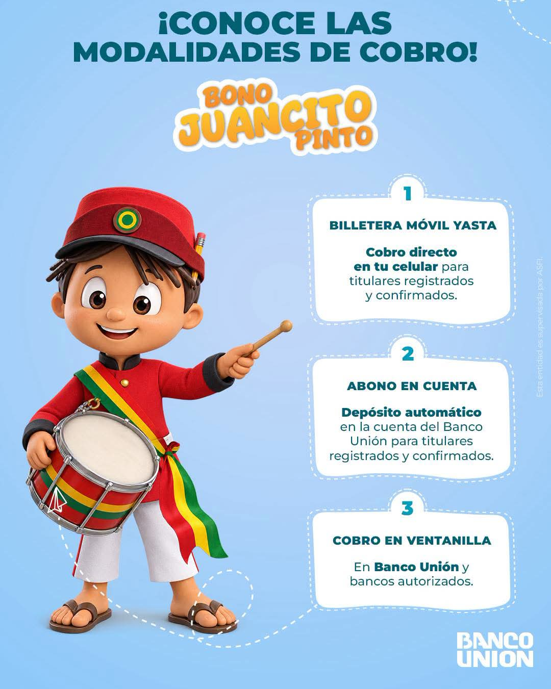

A partir de este lunes 26 de octubre, el Ministerio de Educación inicia la distribución del Bono Juancito Pinto en todo el país. Para esta gestión, el beneficio estatal se incrementó de Bs 200 a Bs 300 por estudiante, alcanzando a más de 2.2 millones de alumnos de unidades educativas fiscales, de convenio y educación especial.
Con el fin de evitar largas filas en las entidades financieras, el Gobierno nacional implementó tres modalidades oficiales para hacer efectivo el cobro:
- Billetera Móvil “Yasta”
Permite la transferencia digital directa al teléfono celular del tutor.
- Abono en cuenta
Depósito automático para usuarios con cuentas habilitadas en el Banco Unión.
- Ventanillas bancarias
Cobro presencial en agencias autorizadas, sujeto a un cronograma obligatorio según la terminación de la cédula de identidad del titular.
Para la modalidad presencial, los padres de familia o tutores registrados deben presentar su cédula de identidad original y una fotocopia simple. Los beneficiarios ya pueden verificar su habilitación y el tutor asignado ingresando el código RUDE del estudiante en la plataforma oficial de consulta del Ministerio de Educación.
Fuente de consulta: Ministerio de la Presidencia · Información del Bono Juancito Pinto

